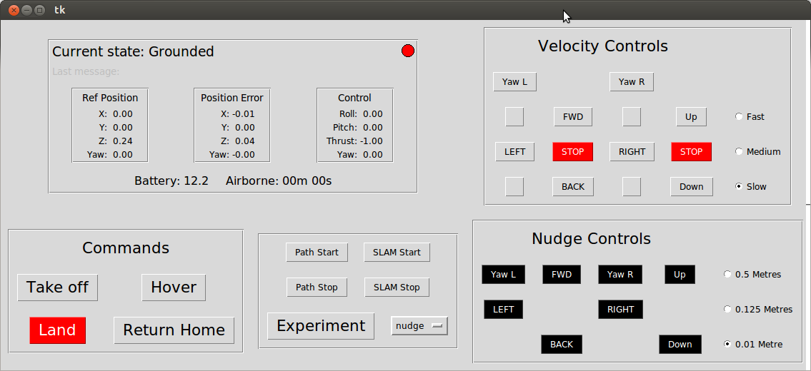

Fly
On the transmitter, ensure left stick is full down and right stick is neutral.
Pull switch G towards you. IF ANYTHING GOES WRONG, PUSH SWITCH G BACK. This is your emergency stop. Keep the transmitter close at all times.

Ready. On the GUI, press "Take off".
Use the velocity buttons to set the drone moving or the nudge buttons to move it a fixed amount. Press Land at any time to stop and land.
Previous
Finish
Cancel